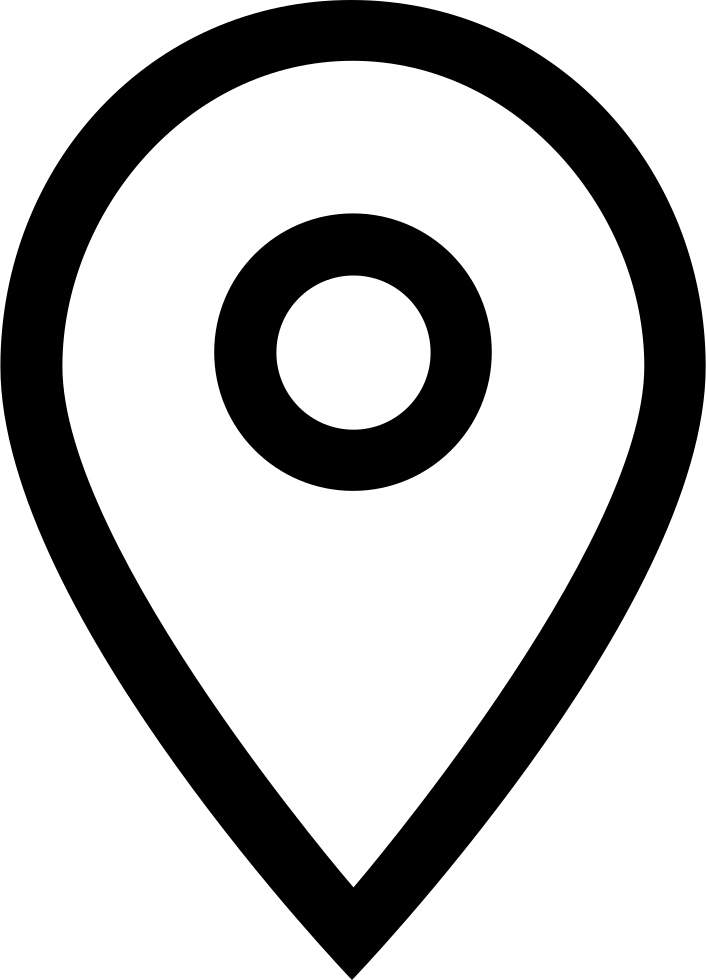

Массачусетский технологический институт (MIT) - это независимый частный исследовательский университет совместного обучения, расположенный в городе Кембридж, штат Массачусетс.
Основанный в 1861 году, MIT ставит своей целью "углубление знаний и подготовку студентов в области науки, технологии и других областях знаний, которые принесут наибольшую пользу нации и миру сегодня". Его девиз - Mens et Manus, что переводится как "Ум и рука".
Университет претендует на 85 Нобелевских лауреатов, 58 лауреатов Национальной медали науки, 29 лауреатов Национальной медали технологий и инноваций и 45 стипендиатов Макартуров. Среди его впечатляющих выпускников - Кофи Аннан, бывший генеральный секретарь Организации Объединенных Наций.
Среди научных открытий и технологических достижений MIT - первый химический синтез пенициллина, разработка радара, открытие кварков и изобретение памяти на магнитных сердечниках, что позволило создать цифровые компьютеры.
В настоящее время MIT состоит из пяти различных школ: архитектуры и планирования, инженерного дела, гуманитарных наук, искусств и социальных наук, менеджмента и науки.
В нем работают около 1 000 преподавателей и более 11 000 студентов и аспирантов. Современные области исследований MIT включают цифровое обучение, устойчивую энергетику, большие данные, здоровье человека и многое другое.
Помимо того, что MIT уделяет особое внимание инновациям и предпринимательству, он также может похвастаться разнообразной и динамичной атмосферой кампуса с широким спектром студенческих групп. Кампус расположен на 168 акрах в Кембридже и включает 18 студенческих общежитий, 26 акров игровых полей, 20 садов и зеленых зон, а также более 100 общественных произведений искусства.
По оценкам MIT, все его живые выпускники основали более 30 000 действующих компаний, создали 4,6 миллиона рабочих мест и обеспечили ежегодный доход в размере около 1,9 триллиона долларов.
Вместе взятые, эта "нация MIT" эквивалентна, по их словам, 10-й по величине экономике в мире.

United States
Massachusetts Institute of Technology

77 Massachusetts Avenue, Cambridge, Massachusetts, 02139-4307, United States